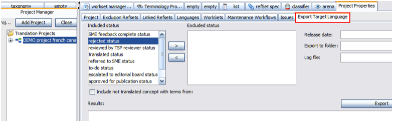
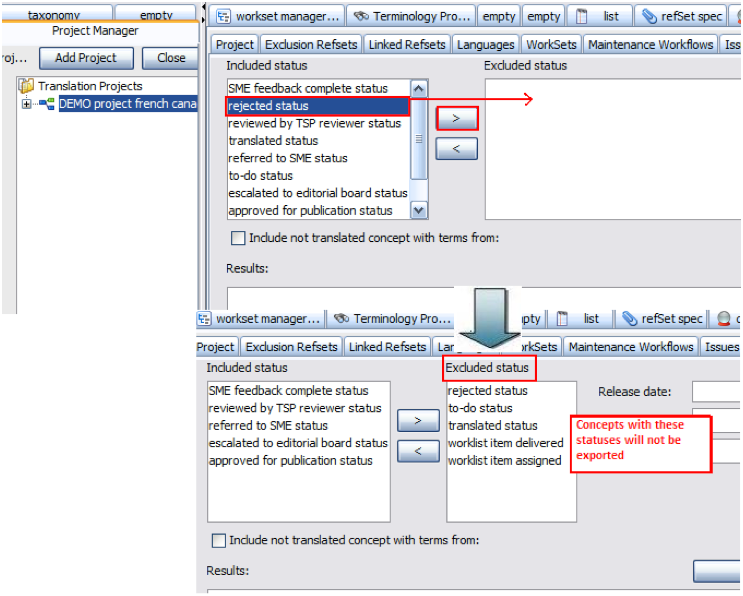
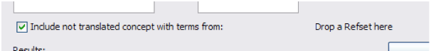
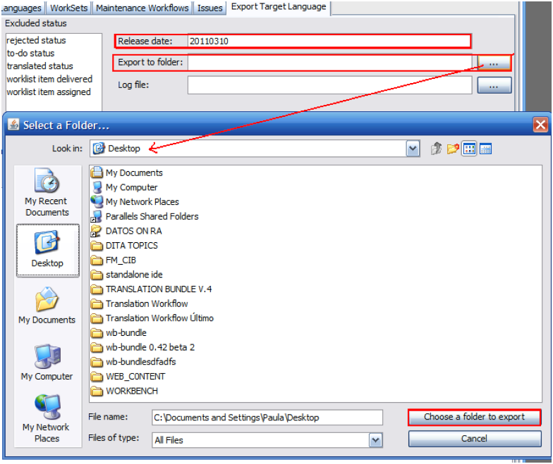
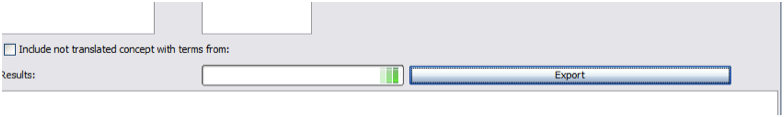
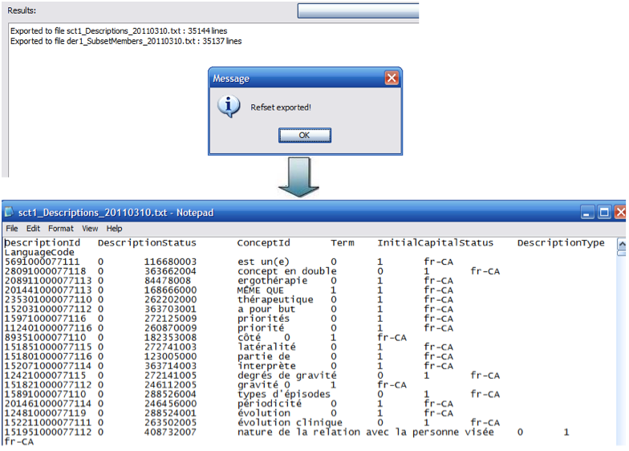

This tab allows exporting translated language refsets.
The window on the left shows all the translatios statuses, while the one on the right will display any concept statuses that will not be exported, e.g., translated status, rejected, etc.

Click the “>”or “<” buttons to move the selected statuses from one side to another:

If your translation is not complete but you need to export a full concepts table for any reason, you may tick the “Include not translated concepts ….” box to enable a drag and drop function and drop a refset to complete your table:

Then, you should specify a release date (YYYYMMDD) and choose a folder to export. If you need to browse where will you place your export, click the button on the right. The log file name should be left empty:

Then press the export bar. Exportation may take some time when the language refset is large. A working bar is displayed during this process:

When the process ends, a message is displayed and you will be able to open your exported files:
